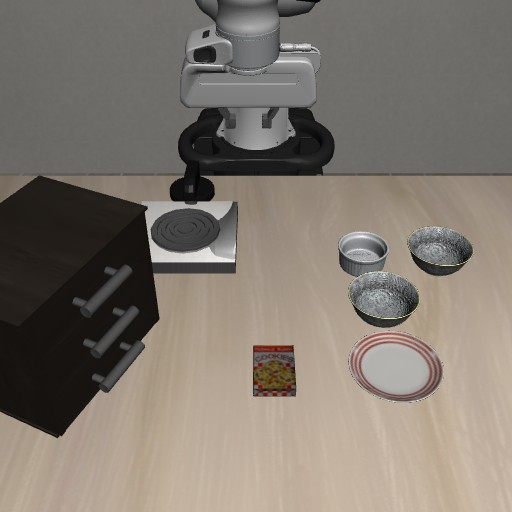

Look through the robot’s decisions.
Explore the real workspace with a complete, recorded GPT-6 episode.

EXTERNAL CAMERA WRIST CAMERA
WRIST CAMERAThe model’s stated interpretation, not an independent measurement.
Original model text · English
Pick up the black bowl between the plate and the ramekin and place it on the plate.
Single step alternates before/after views. Decision replay skips between recorded keyframes; the complete video below shows every control step.
These are this episode’s settings. To change the task, model, or API connection, run ManiLoop locally.
Official LIBERO success at control step 706. This is the episode’s final evaluation, not the score at the frame currently selected.
Success triggered during the final lowering action. The environment stopped with the gripper still closed; release and retreat were not tested.
Human review only · Evaluation was excluded from policy input.
Read the result and conditions ↗Original recorded feedback
35.35 seconds of simulation playback, including all grasp retries in this single attempt. Model waiting time is omitted. No cuts, interpolation, or newly generated actions.
The local application lets you select tasks, configure model access, and execute new robot actions. Install the main and LIBERO environments, then run:
python -m maniloop demo --backend libero --codex-login --port 8767